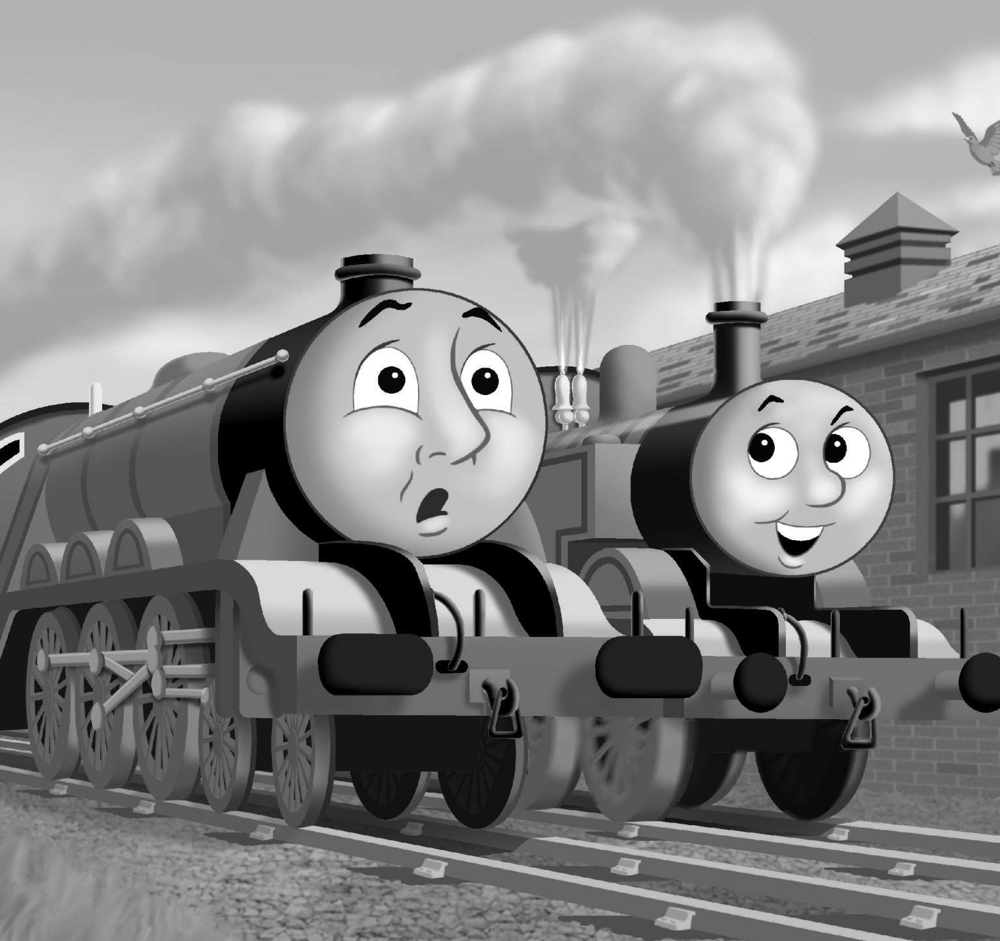

分别教育高功能和低功能孩子的实践指导已有很多。幸运的是，对严重自闭症的孩子也有了有效的教育项目。我曾提过应用行为分析。在这里，合适的技巧和行为是通过学习理论原则教授的。音乐疗法和艺术疗法也都有其益处。言语疗法可以极大帮助提高发音和使用语言。各种疗法都不是听上去那么简单，因此需要训练有素的治疗师。通常还需要好几项技巧的结合才行。一个有天分又投入的老师或是父母会带来很大改变，这同时也意味着，我们并不真正知道神奇成分究竟是什么。
所用的技巧中有些含有非常高强度的社交情感互动和游戏。例如，有一种比生活更夸张的互动，为增强这种互动，他们像母亲们对婴儿那样，使用变调的声音和面部表情。对稍大的孩子和青少年，社交技能训练很受欢迎，效果明显。引人入胜的资料随处可得，例如有些动画片和电影非常清晰地呈现着情感的表达。
一个例子是《托马斯小火车》。这是一本颇受孩子们欢迎的书，而且看起来是自闭症孩子们的最爱。家长们认为，小火车头们清晰的面部表情和简单的社交互动故事解释了诸如合作、竞争、骄傲、焦虑及嫉妒，看上去非常适合作为教学辅助。“小火车们的名字是他在会叫妈妈爸爸之前就会念的第一批单词。”为数不少的家长如是描述。

图20 W. V.奥德里为孩子们写的小火车系列童书。《托马斯小火车》在1946年问世，一直以来享誉世界。自闭症孩子们被火车头的图片吸引，它们有独特的个性和传神的表情，孩子们能通过故事学习社交信号
我们很容易访问剑桥自闭症研究中心的网站，它就是用了小火车的创意，起名叫“运输者”。这些改编过的故事里的主人公，被用来辅助教授社交技巧和社交信号。这些主人公展现了清楚、简化的情感表达。设计简洁，故事简单，这似乎才能巩固学习，寓教于乐。